Google Workspace Studio là công cụ tự động hóa workflow (quy trình công việc) mới nhất của Google,
được tích hợp sâu với hệ sinh thái Google Workspace (Gmail, Drive, Sheets, Docs, Chat, Calendar, Forms, Tasks)
và sử dụng Gemini AI làm engine xử lý thông minh.
Workspace Studio là phiên bản chính thức (GA) được phát triển từ sản phẩm alpha trước đó có tên
Google Workspace Flows. Nó cho phép người dùng tạo các flow (quy trình tự động) mà
không cần viết code, giúp tiết kiệm thời gian với các tác vụ lặp đi lặp lại hàng ngày.
Điểm nổi bật:
No-code: Không cần lập trình — kéo thả, chọn step, hoặc mô tả bằng ngôn ngữ tự nhiên.
AI-powered: Gemini tạo flow tự động, tóm tắt email, trích xuất dữ liệu, ra quyết định.
Cross-app: Kết nối Gmail, Sheets, Drive, Chat, Calendar, Forms, Tasks + ứng dụng bên thứ 3 (Salesforce, Asana, Jira, Slack, Mailchimp, Confluence).
Mỗi flow trong Workspace Studio gồm 2 thành phần chính:
STARTER (Trigger)→STEP 1→STEP 2 (AI)→STEP 3→...
2.1. Starter (Trigger — Sự kiện khởi động)
Starter là sự kiện kích hoạt flow. Khi sự kiện xảy ra, flow sẽ tự động chạy.
Ví dụ: nhận email mới, đến giờ lên lịch, file mới được thêm vào Drive, form mới được submit...
2.2. Steps (Các bước hành động)
Steps là các tác vụ mà flow thực hiện sau khi được kích hoạt. Mỗi flow có thể có nhiều step,
các step chạy tuần tự — step trước hoàn thành rồi mới đến step sau.
2.3. Variables (Biến dữ liệu)
Variables là placeholder cho dữ liệu từ starter hoặc các step trước đó.
Chúng cho phép truyền dữ liệu động giữa các step, tạo nên sức mạnh của flow.
Ví dụ: Khi nhận email, bạn có thể dùng variable [Email subject] từ starter
để chèn tiêu đề email vào nội dung Chat message ở step tiếp theo. Để chèn variable,
click vào trường text rồi nhấn @ hoặc click nút Variables +.
Use flow templates: Duyệt template theo app hoặc use case.
Create with AI: Mô tả bằng ngôn ngữ tự nhiên để Gemini tạo flow.
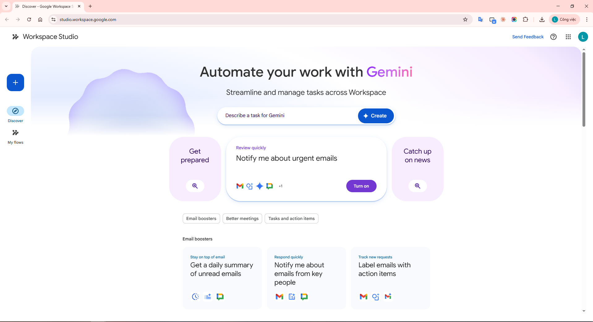
Hình 1: Trang Discover — giao diện chính của Google Workspace Studio
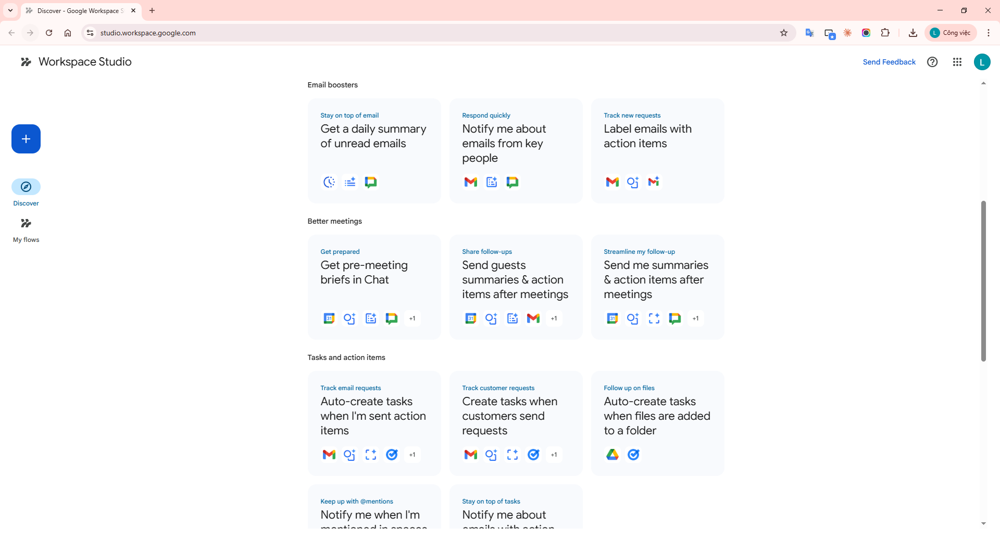
Hình 2: Danh sách Templates — các flow mẫu có sẵn phân loại theo app
3.2. Flow Editor (Trình chỉnh sửa flow)
Khi mở hoặc tạo flow, bạn vào trình editor để:
Chọn/cấu hình Starter và các Steps.
Thêm, xóa, sắp xếp lại step.
Thêm variable từ step trước.
Đổi tên flow, copy, xóa, chia sẻ.
Test run: Chạy thử flow ngay lập tức.
Turn on: Bật flow để chạy tự động.
3.3. Activity Page (Trang lịch sử hoạt động)
Sau khi flow chạy, bạn xem lịch sử tại đây:
Xem chi tiết từng lần chạy (expand details).
Lọc theo trạng thái: Completed, In Progress, Error.
Xem thời gian bắt đầu của mỗi lần chạy.
Refresh để cập nhật dữ liệu mới nhất.
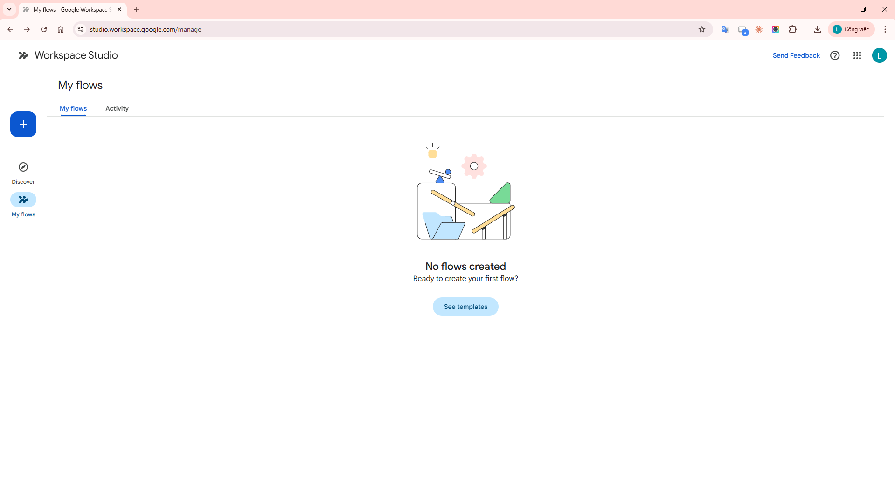
Hình 3: Trang My Flows — danh sách tất cả flow đã tạo
4. Danh sách Starters & Steps đầy đủ
4.1. Tất cả Starters
Starter
Mô tả
Ví dụ
On a schedule
Flow chạy vào ngày/giờ cụ thể
Mỗi sáng thứ Hai, tạo Google Doc mới cho meeting notes tuần
When I get an email
Flow chạy khi nhận email mới (lọc theo label, sender, subject, attachment)
Khi nhận email có subject "Invoice" và có attachment, lưu attachment vào Drive
When someone joins a space
Flow chạy khi có người mới join Chat space
Gửi tin nhắn chào mừng kèm link tài liệu dự án
When I get a chat message
Flow chạy khi có tin nhắn mới trong Chat space
Nếu tin nhắn chứa "urgent", tạo task ưu tiên cao
When I'm mentioned
Flow chạy khi bạn được @mention trong Chat
Tự động tạo task trong to-do list khi được mention
When an emoji reaction is added
Flow chạy khi ai đó react emoji vào message
Khi react ✅, gửi email xác nhận "đã duyệt"
When a sheet changes
Flow chạy khi giá trị trong cột/hàng Sheet thay đổi
Khi status đổi sang "Complete", tự archive row
When an item is added to a folder
Flow chạy khi file/folder mới được thêm vào Drive folder
Khi hợp đồng PDF mới được thêm, gửi copy cho team legal
When a file is edited
Flow chạy khi nội dung file cụ thể bị sửa
Thông báo lên Chat space khi "Project Plan" bị sửa
When an item in a folder is edited
Flow chạy khi file trong folder bị sửa
Thông báo khi tài liệu marketing được edit
Based on a meeting
Flow chạy trước/sau sự kiện Calendar
15 phút trước meeting, gửi link agenda lên Chat
When a meeting transcript is ready
Flow chạy khi transcript cuộc họp sẵn sàng
Tóm tắt transcript và tạo task với action items
When a form response comes in
Flow chạy khi có form response mới
Thêm thông tin vào Sheet và gửi email xác nhận
4.2. Tất cả Steps
AI Steps (Bước AI)
Step
Mô tả
Ví dụ
Ask Gemini
Dùng prompt tùy chỉnh để Gemini tạo text, trả lời câu hỏi, biến đổi thông tin
Khi nhận email từ client quan trọng, draft phản hồi lịch sự tự động
Ask a GemPreview
Dùng AI agent chuyên biệt (Gem) cho task cụ thể
Dùng Gem "Brainstormer" để tạo danh sách tagline marketing
Recap unread emails
Tóm tắt email chưa đọc bằng AI
Cuối ngày, recap email 24h qua và post lên Chat
Extract
Gemini tìm và trích xuất thông tin cụ thể từ nội dung
Trích "Order Number" và "Shipping Address" từ email xác nhận
Decide
Gemini phân tích nội dung và đưa ra quyết định true/false
Phân tích email có "urgent" không để quyết định gắn label
Summarize
Gemini tạo bản tóm tắt từ document, meeting, email
Tóm tắt project proposal và post key points lên Chat
Tools (Công cụ logic)
Step
Mô tả
Ví dụ
Check if
Tiếp tục flow chỉ khi điều kiện thỏa mãn (conditional logic)
Nếu subject chứa "Invoice" thì lưu attachment vào Drive
Filter a list
Lọc chỉ một số item từ danh sách của step trước
Từ nhiều attachment, chỉ lưu file có đuôi ".pdf"
Gmail Steps
Step
Mô tả
Draft an email / Draft a reply
Tạo bản nháp email hoặc reply
Add or remove labels
Thêm/xóa label để tổ chức inbox
Mark as read or unread
Đổi trạng thái đã đọc/chưa đọc
Star an email / Remove star
Gắn/bỏ sao cho email
Archive an email
Chuyển email vào archive
Notify me by email
Gửi email thông báo cho chính bạn
Chat, Sheets, Drive, Docs, Tasks Steps
App
Steps
Chat
Notify me in Chat (gửi thông báo cho chính mình)
Sheets
Add a row, Update rows, Clear rows, Get sheet contents
Drive
Add email attachments to Drive, Create a folder
Docs
Create a Google doc, Add to a doc
Tasks
Create a task
Third-party Integrations Alpha
App
Khả năng
Asana
Tạo project, section, task, subtask
Confluence
Tạo page
Jira
Tạo issue và comment
Mailchimp
Quản lý subscriber và campaign
Slack
Gửi message trong Slack workspace
5. 3 cách tạo Flow
Cách
Mô tả
Phù hợp khi
1. Dùng Template
Chọn flow mẫu đã có sẵn logic, chỉ cần cấu hình thông số
Muốn bắt đầu nhanh với tác vụ phổ biến
2. Tạo từ đầu (From Scratch)
Tự chọn starter, thêm step, cấu hình variable
Cần kiểm soát hoàn toàn, use case đặc biệt
3. Mô tả bằng AI (Describe with Gemini)
Viết mô tả bằng ngôn ngữ tự nhiên, Gemini tự tạo flow
Muốn tạo nhanh nhất, chấp nhận chỉnh sửa sau
Mẹo dùng AI: Hãy mô tả cụ thể gồm: flow nên làm gì, dùng app nào, và khi nào chạy. Tốt:"Notify me in Google Chat whenever I get an email from person@example.com" Không tốt:"Handle emails from person@example.com"
6. Workflow mẫu từ Template: Daily Email Summary
Đây là workflow phổ biến nhất để bắt đầu — tự động tóm tắt email chưa đọc và gửi cho bạn mỗi ngày qua Google Chat.
On a schedule Weekday morning→Recap unread emails From "Yesterday"→Notify me in Chat Send summary
Trên trang Discover, tìm template "Get a daily summary of unread emails".
Click vào template → Flow Editor mở ra với logic đã được xây sẵn.
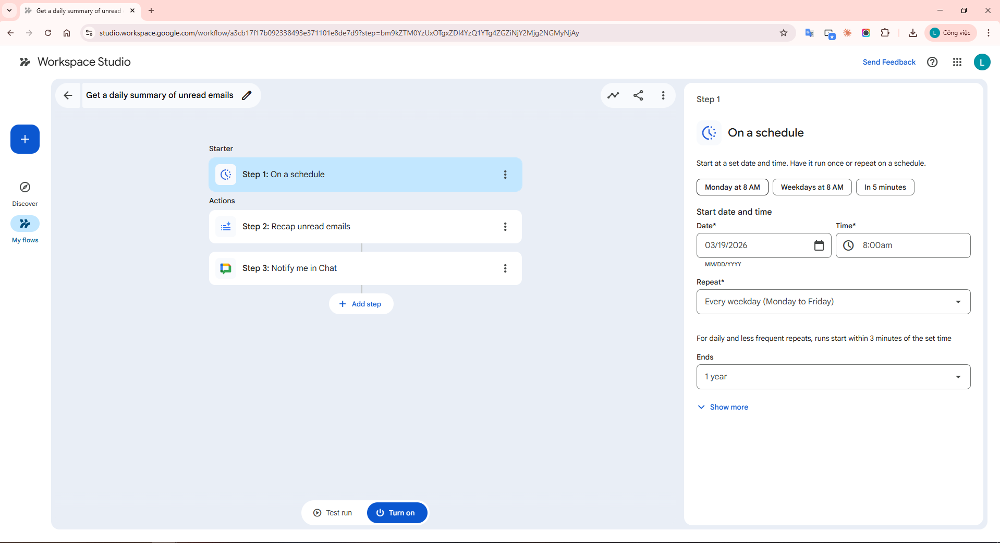
Hình 4: Chọn template "Get a daily summary of unread emails" — Flow Editor mở ra với 3 steps có sẵn
Bước 2: Cấu hình Flow
Template đã có sẵn 3 step. Hãy click qua từng step để hiểu cách hoạt động:
Step 1: On a schedule (Starter)
Đây là starter — xác định khi nào flow chạy.
Mặc định: chạy mỗi sáng ngày thường (weekday morning).
Bạn có thể thay đổi tần suất (hàng ngày, hàng tuần) và giờ chạy theo nhu cầu.
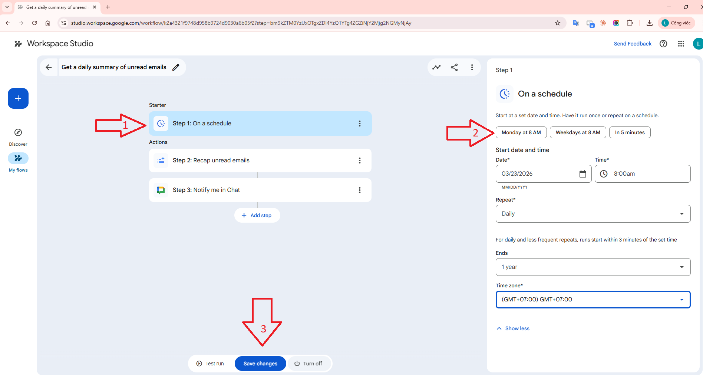
Hình 5: Cấu hình Starter "On a schedule" — chọn tần suất và giờ chạy
Step 2: Recap unread emails (AI Step)
Đây là bước AI — Gemini sẽ quét email chưa đọc.
Được cấu hình để lấy email từ "Yesterday" (ngày hôm qua).
Gemini tạo bản tóm tắt ngắn gọn về nội dung các email.
Có thể giữ nguyên prompt và settings mặc định hoặc chỉnh sửa.
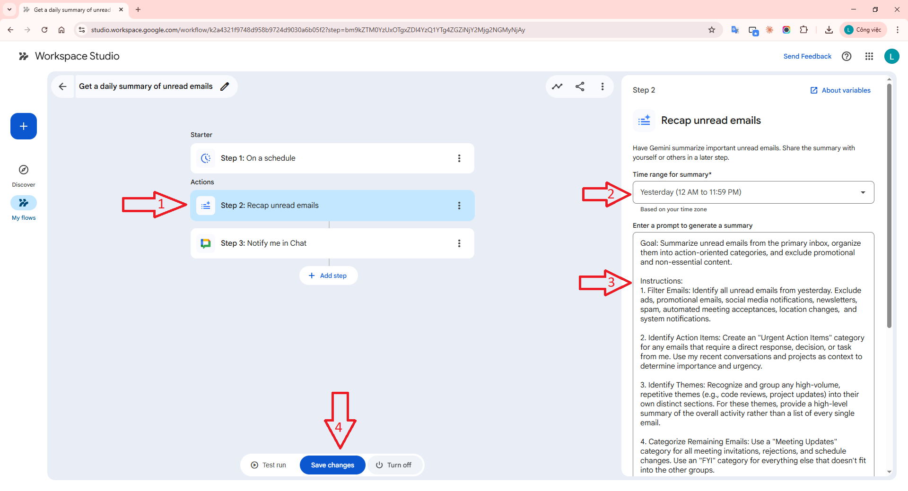
Hình 6: Cấu hình AI Step "Recap unread emails" — Gemini tóm tắt email từ Yesterday
Step 3: Notify me in Chat (Action Step)
Gửi tin nhắn trực tiếp cho bạn qua Google Chat.
Trong trường "Message", có variable chip màu xanh: [Step 2: Summary of unread email].
Variable này lấy kết quả tóm tắt từ Step 2 và chèn vào nội dung tin nhắn.
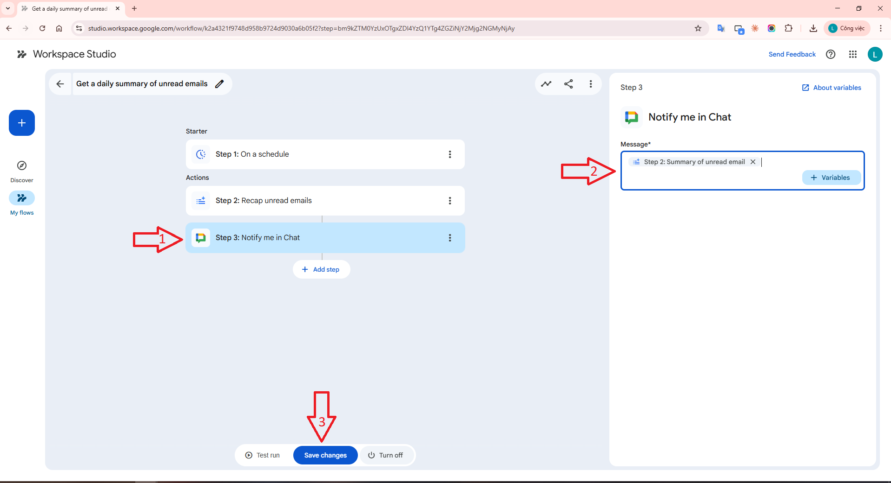
Hình 7: Cấu hình "Notify me in Chat" — variable chip [Summary] truyền dữ liệu từ step trước
Bước 3: Test & Bật Flow
Lưu ý quan trọng: Test run thực hiện hành động thật — sẽ gửi tin nhắn, cập nhật file, tạo meeting thật.
Hãy kiểm tra kỹ cấu hình trước khi test.
Click Test run → Start ở cuối flow editor.
Flow chạy ngay lập tức. Nếu thành công:
Bạn nhận tin nhắn tóm tắt trong Google Chat.
Editor hiển thị "Run Completed".
Nếu mọi thứ OK, click Turn on để bật flow chạy tự động theo lịch.
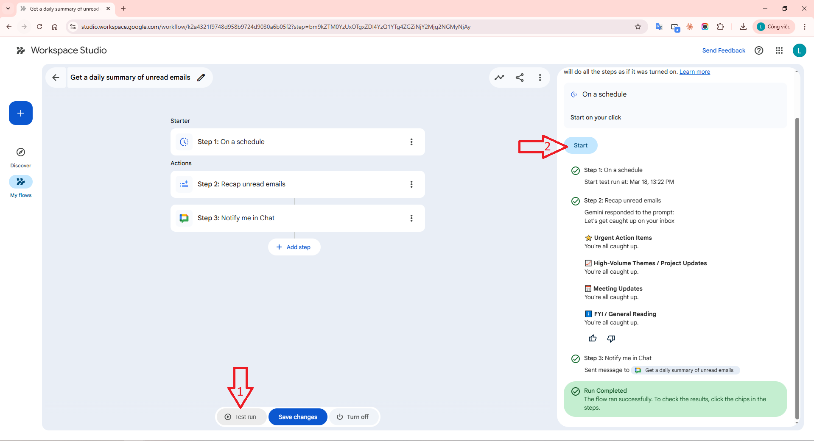
Hình 8: Test run — Flow chạy thành công, hiển thị "Run Completed"
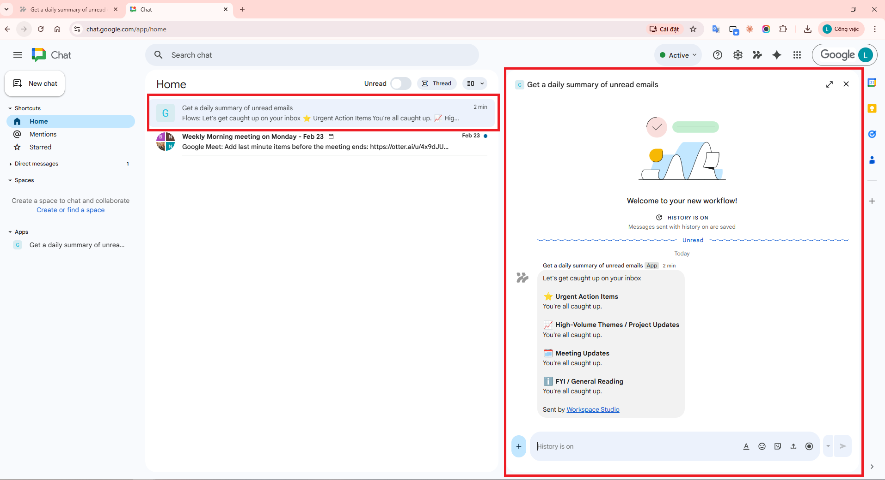
Hình 9: Kết quả trong Google Chat — tin nhắn tóm tắt email AI-generated
Kết quả: Từ bây giờ, mỗi sáng ngày thường, bạn sẽ nhận được bản tóm tắt email chưa đọc
ngay trong Google Chat — không cần mở Gmail và đọc từng email một.
7. Workflow từ đầu: Auto-reply Invoice Email
Tiếp theo, hãy xây dựng flow từ đầu (from scratch) — tự động tạo draft reply
mỗi khi nhận email chứa từ "Invoice".
When I get an email Contains "Invoice"→Draft a reply With dynamic content
Trong danh sách Starters, chọn "When I get an email".
Trong trường filter, nhập: Invoice.
Điều này nghĩa là flow chỉ chạy khi email có từ "Invoice" trong subject hoặc body.
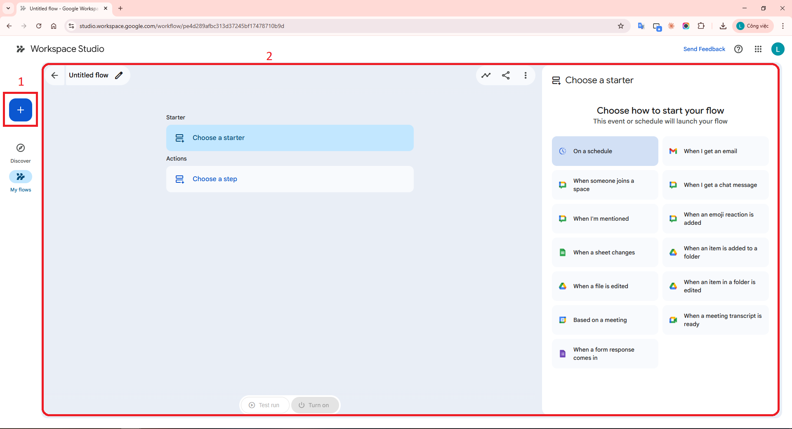
Hình 10: Tạo flow từ đầu (Create from scratch) — giao diện chọn Starter
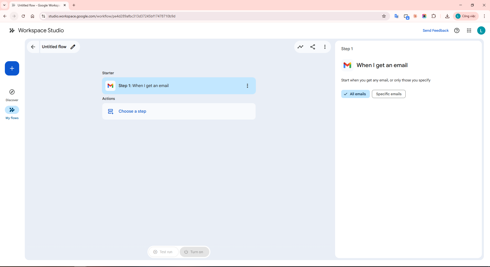
Hình 11: Chọn Starter "When I get an email" với filter "Invoice"
Bước 2: Thêm Step
Bên dưới starter, click "Choose a step".
Trong danh mục "Gmail", chọn "Draft a reply".
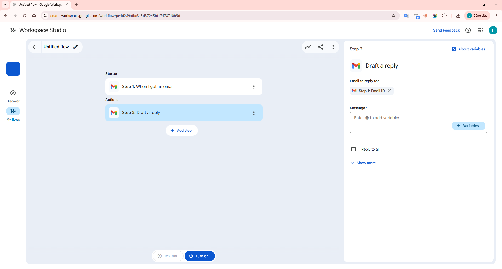
Hình 12: Thêm Step "Draft a reply" từ danh mục Gmail
Bước 3: Dùng Variables tạo nội dung động
Trong trường soạn nội dung draft reply:
Gõ: Hello,
Xuống dòng, gõ: I received the invoice regarding:
Click Variables + hoặc gõ @ → chọn [Email subject] từ starter.
Xuống dòng, gõ: I will review it and get back to you.
Nội dung draft sẽ trông như thế này:
Hello,
I received the invoice regarding: [Email subject]
I will review it and get back to you.
Trong đó [Email subject] là variable chip sẽ được thay thế bằng tiêu đề email thực tế khi flow chạy.
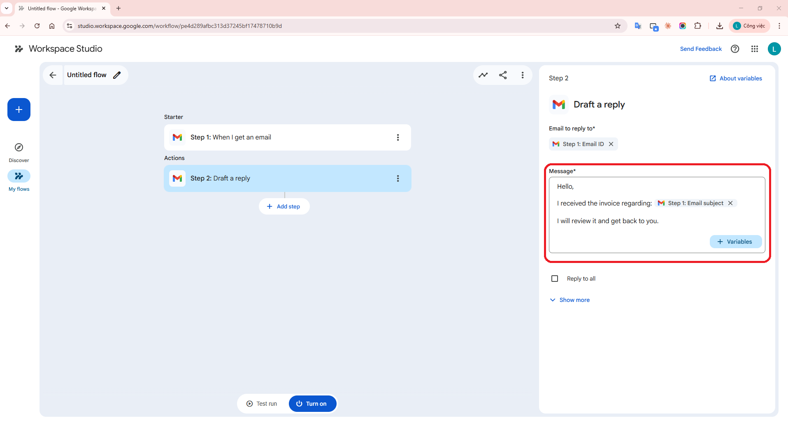
Hình 13: Soạn nội dung draft reply với variable chip [Email subject]
Bước 4: Đặt tên, Test & Bật Flow
Click vào tên flow ở trên cùng để đổi tên, ví dụ: "Auto-reply Invoice Emails".
Click Test run.
Cửa sổ mới hiện ra cho phép chọn email gần đây từ inbox phù hợp với điều kiện starter.
Trong trường "Email received", nhập: Invoice để tìm email matching.
Chọn một email → Click Start.
Nếu thành công: hiện "Run Completed" và có bản draft mới trong thư mục Drafts của Gmail.
Click Turn on để bật flow.
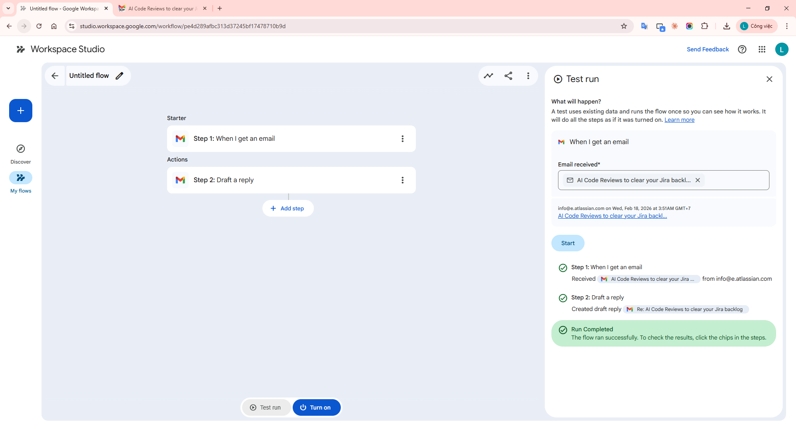
Hình 14: Test run — chọn email matching "Invoice" và chạy thử
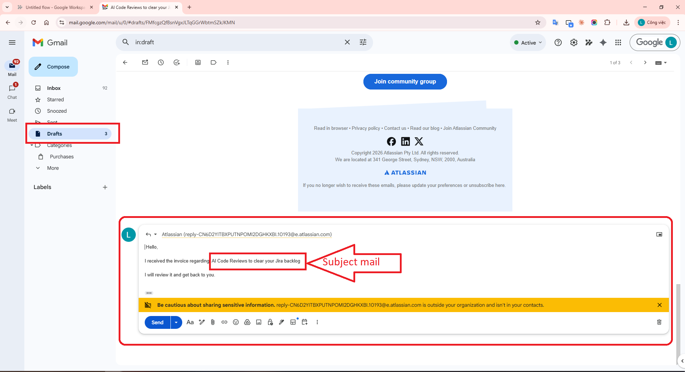
Hình 15: Kết quả trong Gmail Drafts — bản nháp reply được tạo tự động với subject thực tế
Kết quả: Từ bây giờ, mỗi khi nhận email có chứa từ "Invoice", Gmail sẽ tự động tạo
bản nháp reply lịch sự, bạn chỉ cần review và gửi — tiết kiệm thời gian phản hồi.
8. Workflow tự thiết kế: Smart Meeting Notes Pipeline
Đây là workflow do tôi tự thiết kế, kết hợp nhiều tính năng mạnh mẽ của Workspace Studio
để tạo quy trình xử lý cuộc họp thông minh hoàn toàn tự động.
Meeting transcript ready→Summarize transcript→Extract action items→Add row to Sheet→Create tasks→Notify team in Chat
Mục tiêu
Khi cuộc họp kết thúc và có transcript sẵn sàng:
Gemini tự động tóm tắt cuộc họp.
Gemini trích xuất các action item (công việc cần làm).
Ghi lại thông tin cuộc họp vào Google Sheet để theo dõi.
Tạo task trong Google Tasks cho từng action item.
Thông báo cho team qua Google Chat kèm tóm tắt và danh sách công việc.
Chi tiết các bước xây dựng
Starter: When a meeting transcript is ready
Chọn starter "When a meeting transcript is ready".
Flow tự động kích hoạt khi Google Calendar event có transcript mới.
Không cần filter — áp dụng cho tất cả cuộc họp có ghi transcript.
Step 1: Summarize (AI Step)
Chọn step "Summarize" từ danh mục AI Steps.
Input: transcript từ starter (dùng variable [Meeting transcript]).
Gemini tạo bản tóm tắt ngắn gọn gồm: chủ đề chính, quyết định, điểm thảo luận quan trọng.
Step 2: Extract (AI Step)
Chọn step "Extract" từ danh mục AI Steps.
Input: transcript từ starter.
Cấu hình Gemini để trích xuất: Action items, Người chịu trách nhiệm, Deadline.
Step 3: Add a row to Sheet
Chọn step "Add a row" từ danh mục Sheets.
Chọn Google Sheet "Meeting Log" đã tạo trước.
Map các cột:
Date: Variable [Meeting date] từ starter
Meeting Title: Variable [Meeting title] từ starter
Summary: Variable [Step 1: Summary]
Action Items: Variable [Step 2: Extracted data]
Step 4: Create a task
Chọn step "Create a task" từ danh mục Tasks.
Title: kết hợp variable [Meeting title] + "Follow-up".
Click Test run → chọn một meeting gần đây có transcript.
Kiểm tra: Sheet có row mới? Task được tạo? Chat có notification?
Nếu OK, click Turn on.
Kết quả: Sau mỗi cuộc họp, bạn không cần ghi chép thủ công. AI tự tóm tắt, trích xuất
công việc, lưu vào Sheet để tracking, tạo task nhắc nhở, và thông báo cho team. Toàn bộ quy trình
xảy ra trong vài giây sau khi transcript sẵn sàng.
Mở rộng: Bạn có thể thêm step "Check if" để chỉ xử lý meeting có từ khóa cụ thể
(ví dụ: "Sprint Review"), hoặc thêm "Decide" để Gemini phân loại mức độ quan trọng
trước khi gửi thông báo.
9. Mẹo và Best Practices
9.1. Thiết kế Flow hiệu quả
Bắt đầu đơn giản: Tạo flow với 2-3 step trước, test kỹ, rồi mới mở rộng.
Dùng template làm base: Ngay cả khi cần flow tùy chỉnh, bắt đầu từ template gần nhất rồi chỉnh sửa sẽ nhanh hơn.
Đặt tên rõ ràng: Đặt tên flow mô tả mục đích để dễ quản lý khi có nhiều flow.
Test trước khi bật: Luôn Test run trước Turn on. Nhớ rằng test thực hiện hành động thật.
9.2. Dùng AI Steps thông minh
Viết prompt cụ thể: Thay vì "summarize this", hãy viết "Summarize the key decisions and action items from this meeting in bullet points".
Kết hợp Decide + Check if: Dùng Decide để AI đánh giá, rồi Check if để rẽ nhánh logic.
Extract thay vì Summarize: Khi cần dữ liệu có cấu trúc (tên, số, ngày), dùng Extract thay vì Summarize.
9.3. Variables là chìa khóa
Luôn dùng variable chip (nhấn @) thay vì gõ tay dữ liệu.
Variable cho phép flow xử lý đúng dữ liệu thực tế từ trigger, không phải dữ liệu cứng.
Kết hợp text tĩnh + variable tạo nội dung chuyên nghiệp và cá nhân hóa.
9.4. Chia sẻ và cộng tác
Flow có thể chia sẻ bằng link — người nhận có thể copy về và tùy chỉnh.
Dùng Activity page để debug khi flow gặp lỗi.
Xem lọc theo trạng thái (Error) để nhanh chóng phát hiện vấn đề.
10. Phiên bản hỗ trợ & Yêu cầu
Yêu cầu
Chi tiết
Google Workspace Edition
Business Starter, Standard, Plus
Enterprise Standard, Plus
Education Fundamentals, Standard, Plus, Teaching & Learning add-on
AI Features
Yêu cầu Gemini được admin bật
Google AI Ultra for Business hoặc Google AI Pro for Education
Giới hạn tuổi
Tài khoản trường học dưới 18 tuổi không dùng được AI features
App Access
Template hiển thị theo app bạn có quyền (ví dụ: không có Gmail = không thấy Gmail templates)
Google Workspace Studio là bước tiến lớn trong việc đưa AI automation đến với mọi người dùng Google Workspace.
Với giao diện no-code trực quan, sức mạnh Gemini AI tích hợp sẵn, và khả năng kết nối đa app,
Workspace Studio giúp bạn:
Tiết kiệm thời gian: Tự động hóa các tác vụ lặp đi lặp lại (email, meeting notes, form processing).
Giảm sai sót: AI xử lý nhất quán, không quên bước nào.
Tập trung công việc quan trọng: Để máy xử lý admin tasks, bạn tập trung sáng tạo.
Dễ bắt đầu: Templates có sẵn, hoặc mô tả bằng lời cho Gemini tạo flow.
Dù bạn là người mới bắt đầu hay đã quen với automation, Workspace Studio cung cấp đủ công cụ
từ template đơn giản đến flow phức tạp nhiều bước với conditional logic và AI.
Hãy bắt đầu với template "Daily Email Summary" và dần xây dựng các flow phù hợp với quy trình
làm việc của bạn.